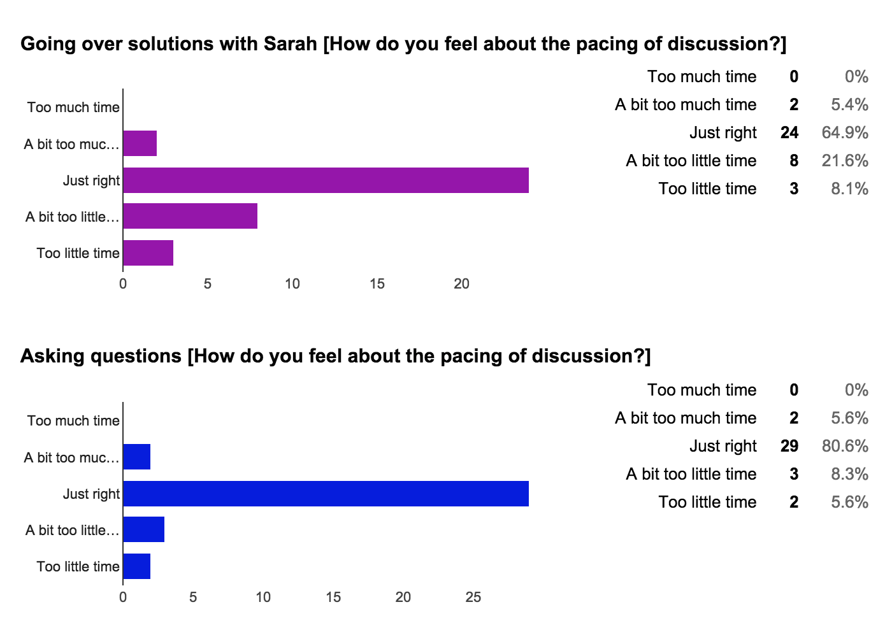

Responses to CS 61B Mid-Semester Survey
Monday, October 19, 2015
A week or so ago, we released the mid-semester survey to students. We received responses from 421 students in the course (46 for my sections in particular). I wanted to go over the responses in class and respond to interesting things, but I realized that would take too much time. So here's a post instead!
Firstly, I wanted to thank everyone who took the time to fill out the survey. I really appreciate feedback on things that are going well/could go better as I hope it will help me improve my teaching and also make class time more valuable for you. Also, something I noticed is that mostly all the criticism received was very cordial and constructive so thank you for this as well.
Do you attend discussion? If not, why not?
It looks like the vast majority of respondents attend discussion semi-regularly. In the future, I should have a multiple-choice question asking what percentage of the time you attend discussion as this would be interesting for statistical reasons.
Student response:
no; it hasn't been helpful to me. the material is way easier than any homework assignment, project, lab, or especially exam.
I should note that I'm completely okay with students who don't attend section. You should do what you feel is the most efficient and productive use of your time. Also, I do sympathize with this response.
Unfortunately, the difficulty of discussion material is unlikely to dramatically change because it serves a different purpose than the other assignments/exams in this course. Discussion is meant to introduce students to new material and/or start working on problems only started in lecture. It is far limited in time compared to the time available to work on programming assignments. Also, exams are meant to assess understanding, not teach a new concept, so hopefully it's understandable that discussion questions are easier than exam questions.
Student response:
Nope. I am more than comfortable going through problems on my own at my own pace. The logical nature of the problems makes them more accessible in a quiet private space.
This is completely fine with me! The only thing I would highly recommend to those who don't regularly attend discussion is that they do exactly this -- study the problems on your own.
Please list two things you like/find helpful about discussion.
I really like this question because reading the responses makes me happy. I will try my best to keep doing these things well and focus on doing things that are really helpful!
Student response:
Sarah always has these helpful tables and extra information that's really helpful for understanding the material She makes sure we understand the problems before we move on
Yay! Happy dance! I remember my own 61B TA (Iris Wang). I loved attending discussion for this exact reason. She always had these really helpful charts/diagrams, and going to discussion would clarify so many concepts for me. It also looks like a large number of responses mentioned charts and/or explanations, so I will try to keep it up!
Please list two things you dislike/find unhelpful about discussion.
It looks like most of the unhappy things were related to timing of various segments in discussion. I will address some of the concerns here and also later when I show the charts of how people think I should spend the time.
Student response:
It will be better if she can be more quick in going thru easy question so that we can have more time going thru difficult question. Sometimes she is easy distracted by some people
Hmm, I do understand the feeling behind this response. I will try harder to keep the discussion on topic and spend a bit less time on easy questions. That being said, I should note that students don't necessarily have a consensus on which questions are difficult. Something you find easy might be difficult to another student, and vice versa. I will generally try to target the median student, and I usually ascertain difficulty levels by walking around checking on how things are going.
I also think I may know what you mean by me being easily distracted by "some people." Something I will note is that just because I spend more class time responding to questions from the more vocal students doesn't mean that it's not beneficial to some of the other students as well. I've noticed that for every student that speaks up, there are usually a number of other students with the same question but too shy to ask it. So don't worry about asking questions! I will keep answering them (so long as they don't completely derail the class by being off topic).
Student response:
I think it would be beneficial if we took the entire 1.5 hours and moved at a little slower pace.
Haha. I think you may be mistaken. Discussion is officially only 1 hour long (though I often end up going overtime). Like you, I wish discussion were longer. ;)
Student response:
- A lot of people are in the discussion. - Sometimes time is wasted on few students.
It sounds like you're attending my busy section (on Tuesdays). Try my Monday section! There are far fewer students, and I get the feeling that it moves a bit more quickly than the Tuesday section.
How do you feel about the pacing of discussion?
The data here is quite conclusive. I need to give a bit less time for working on problems to save more time for going over solutions together and getting through more of the worksheet. Duly noted!

{kind=link}
{kind=link}
{kind=link}
This next pie chart (above) is pretty funny. It looks like the majority of you are fine with the number problems we finish. Then nearly equal numbers of you would like to finish more or less problems. What I got from this is that I'm correctly targetting the median student, and I won't change anything in terms of how thoroughly I go through problems.
Do you have any comments/suggestions for lab?
Student response:
Student response:
Student response:
Student response: